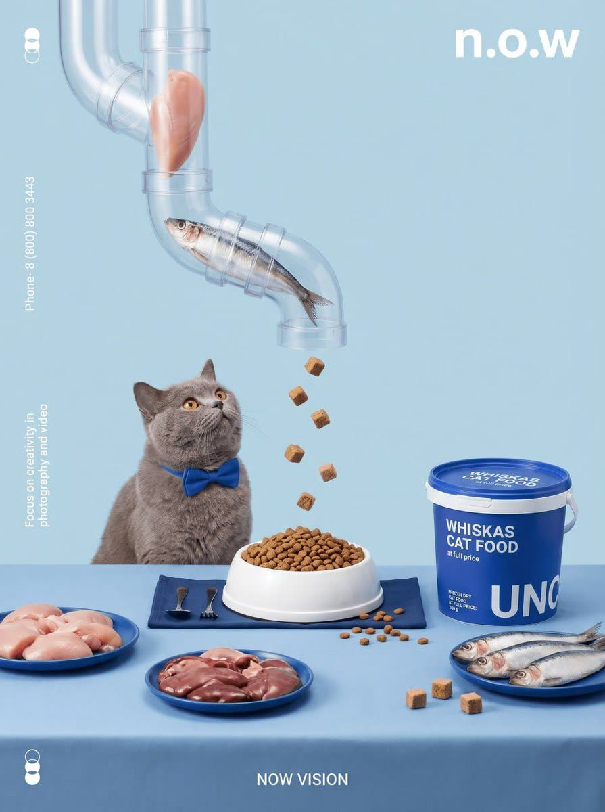

Luxury Chocolate Ad Still Life
PRP-005Prop stylingNano Banana Proby Lucas AIAugust 17,

A complex advertisement layout for premium chocolate featuring tiered glass trays, ingredients, and gold-foiled packaging on a pink background.
Prompt
A bright, stylized still life and a conceptual photograph from an advertisement for {argument name="product" default="premium chocolate"} on a {argument name="background color" default="delicate, pastel pink background"}. In the center is a luxurious dark chocolate bar wrapped in gold foil, slightly unwrapped to reveal glossy chocolate lying on a small pink velvet cushion. It is surrounded by a custom-made multi-tiered glass tray system descending from the top left. On the topmost tier there are whole cocoa beans, on the middle - pieces of roasted almonds, and on the bottom - small pieces of chocolate that fall into an elegant pink porcelain bowl. Various chocolate ingredients are laid out on the pink surface around the bar: right in front of the bar, on a delicate pink napkin, there is a large round plate filled with chocolate truffles. There is a small gold spoon and fork next to it. On the right is a tall cylindrical pink container with a golden label of the chocolate brand. There is an inscription on the lid: "{argument name="main text" default="LUXURY CHOCOLATE IS A PREMIUM CHOICE"}." On the side: "HANDMADE CHOCOLATE, 150 g" with large letters "LUX". Around the main plate are three separate pink plates with ingredients: a plate with whole cocoa beans (far left), a small central plate with pieces of caramel and a long plate with roasted almonds (far right). There are several pieces of chocolate and truffles scattered on the surface of the table, and five small truffles are neatly arranged on the rightmost plate. There are many text elements on and around the image: Top right: "LUXURY TASTE", typed in a clean white font. On the left (vertically): "Contact- 1 (800) 555 2020", On the handset (vertically): "Focus on creativity in photography and video." At the bottom of the center: "LUXE VISION". Logos in the form of three intertwining circles are located at the top left and bottom left. The soft but clear lighting highlights the texture of the chocolate and ingredients, and the overall composition is carefully chosen to show the transformation of raw cocoa into refined, ready-to-eat chocolateTags: product, 9:16 vertical